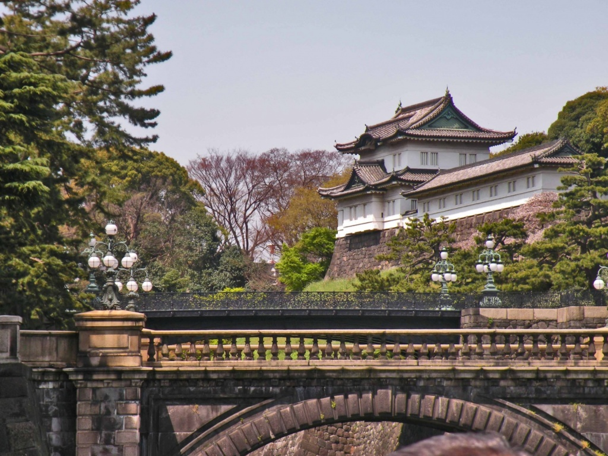
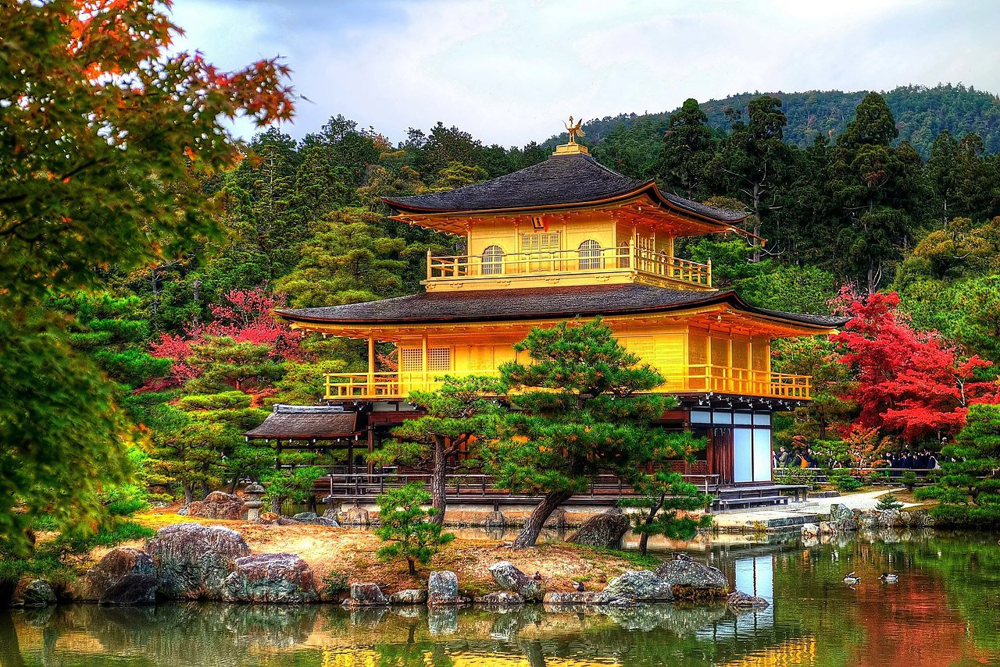
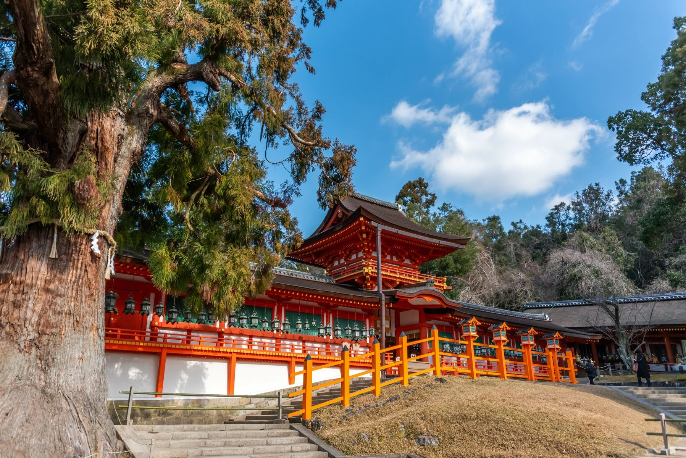
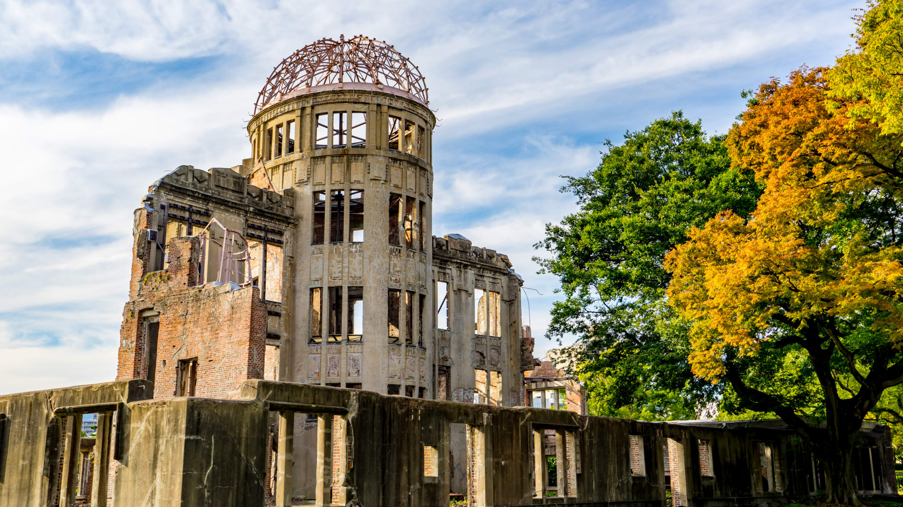
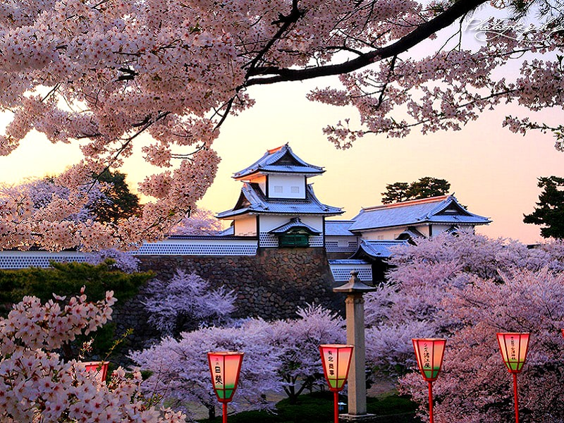
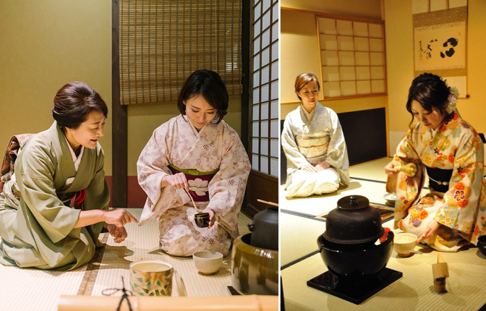

Лучшее время для поездки — весна (цветение сакуры) или осень (яркие клёны). Для перемещения между городами удобно использовать скоростные поезда синкансэн.
Этот маршрут позволит не только увидеть главные исторические памятники, но и почувствовать дух Японии, познакомиться с её легендами и традициями.